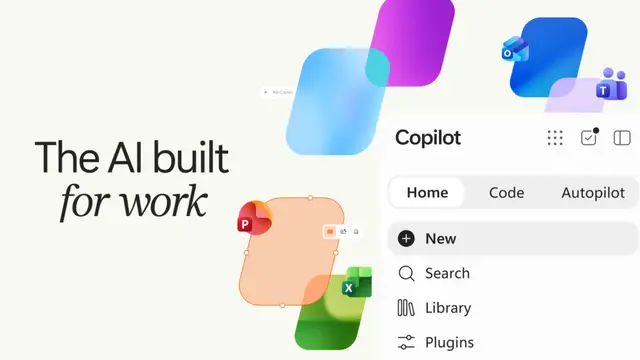

#copilot
MicrosoftがCopilotを再設計、「Home・Code・Autopilot」でAIを仕事の実行基盤へ

Microsoftは2026年9月25日、Microsoft Copilotを再設計し、「Home」「Code」「Autopilot」を中核とする新たな構成を発表しました。単なる対話型AIから、仕事の委任、アプリ開発、継続的な自律実行までを一つの環境で扱う方向へ大きく踏み込んでいます。 0
記事で取り上げている点
- Home：OfficeとAI作業を一つの入口に統合
- Code：自然言語から業務アプリを構築
- Autopilot：指示を待たず継続的に働くエージェント
- AIコスト管理も重要な設計要素に
- 今後の展望
一次情報（出典） blogs.microsoft.com